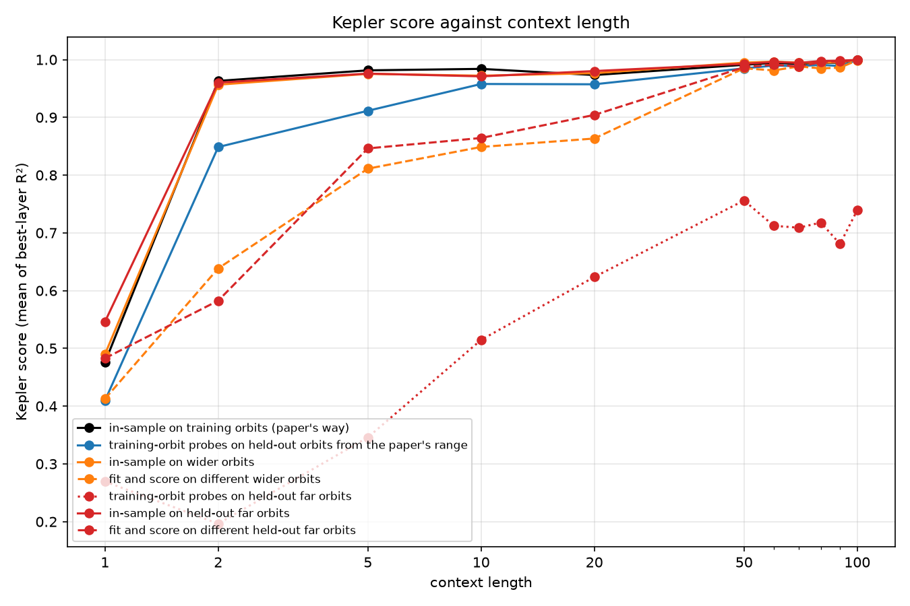
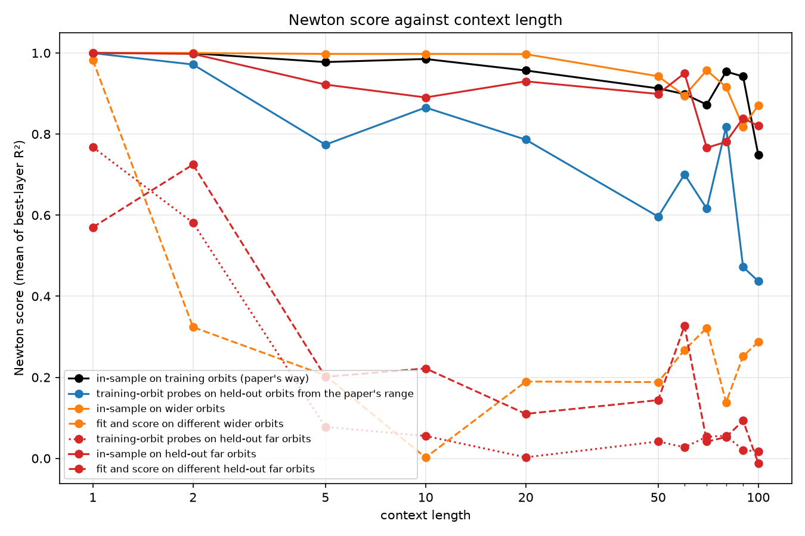
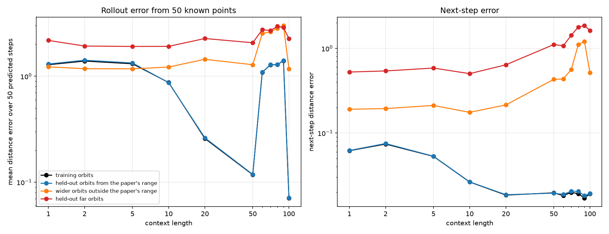
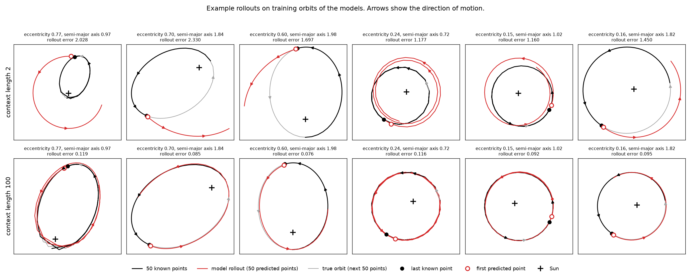
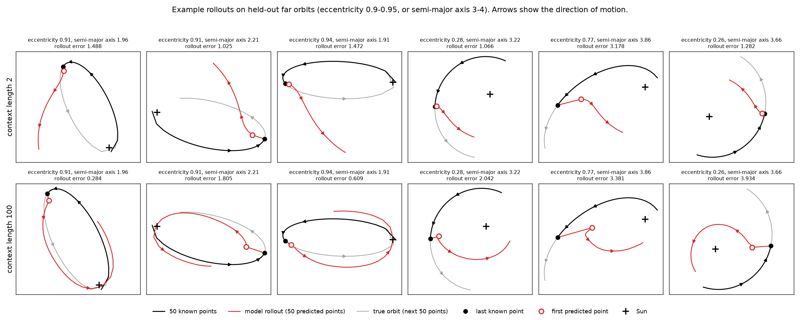

Kepler to Newton models on new orbits
This test scores the 11 context-length models of the paper reproduction on new orbits, with no new training.
Force probes that are fitted and scored on different orbits give lower scores than the paper's in-sample probes, most at long context lengths and on far orbits.
The Newton score at context lengths 2 and 100 is 0.999 and 0.748 in-sample, and 0.972 and 0.437 on held-out orbits from the paper's range.
Kepler score
| context length | training orbits | held-out orbits from the paper's range (eccentricity 0-0.8, semi-major axis 0.5-2) | wider orbits outside the paper's range (eccentricity up to 0.9, semi-major axis up to 3) | held-out far orbits (eccentricity 0.9-0.95, or semi-major axis 3-4) | |||
|---|---|---|---|---|---|---|---|
| in-sample, the paper's way | probes fitted on training orbits | in-sample | fitted and scored on different orbits | probes fitted on training orbits | in-sample | fitted and scored on different orbits | |
| 1 | 0.476 | 0.410 | 0.490 | 0.413 | 0.269 | 0.546 | 0.483 |
| 2 | 0.963 | 0.849 | 0.957 | 0.638 | 0.196 | 0.960 | 0.583 |
| 5 | 0.981 | 0.911 | 0.975 | 0.811 | 0.346 | 0.976 | 0.846 |
| 10 | 0.984 | 0.958 | 0.972 | 0.849 | 0.515 | 0.971 | 0.864 |
| 20 | 0.973 | 0.957 | 0.976 | 0.863 | 0.624 | 0.980 | 0.904 |
| 50 | 0.991 | 0.985 | 0.995 | 0.985 | 0.756 | 0.993 | 0.987 |
| 60 | 0.994 | 0.990 | 0.996 | 0.981 | 0.712 | 0.996 | 0.991 |
| 70 | 0.993 | 0.989 | 0.995 | 0.988 | 0.709 | 0.994 | 0.988 |
| 80 | 0.995 | 0.991 | 0.995 | 0.985 | 0.718 | 0.998 | 0.996 |
| 90 | 0.994 | 0.989 | 0.996 | 0.986 | 0.681 | 0.998 | 0.997 |
| 100 | 0.999 | 0.999 | 0.999 | 0.999 | 0.739 | 0.999 | 0.999 |
Newton score
| context length | training orbits | held-out orbits from the paper's range (eccentricity 0-0.8, semi-major axis 0.5-2) | wider orbits outside the paper's range (eccentricity up to 0.9, semi-major axis up to 3) | held-out far orbits (eccentricity 0.9-0.95, or semi-major axis 3-4) | |||
|---|---|---|---|---|---|---|---|
| in-sample, the paper's way | probes fitted on training orbits | in-sample | fitted and scored on different orbits | probes fitted on training orbits | in-sample | fitted and scored on different orbits | |
| 1 | 1.000 | 1.000 | 1.000 | 0.982 | 0.768 | 1.000 | 0.570 |
| 2 | 0.999 | 0.972 | 1.000 | 0.324 | 0.581 | 0.998 | 0.725 |
| 5 | 0.978 | 0.774 | 0.998 | 0.204 | 0.078 | 0.922 | 0.201 |
| 10 | 0.985 | 0.865 | 0.998 | 0.002 | 0.056 | 0.890 | 0.222 |
| 20 | 0.957 | 0.786 | 0.997 | 0.190 | 0.003 | 0.930 | 0.110 |
| 50 | 0.913 | 0.596 | 0.943 | 0.188 | 0.042 | 0.899 | 0.144 |
| 60 | 0.899 | 0.701 | 0.895 | 0.268 | 0.027 | 0.950 | 0.327 |
| 70 | 0.873 | 0.616 | 0.957 | 0.322 | 0.053 | 0.766 | 0.042 |
| 80 | 0.954 | 0.817 | 0.916 | 0.138 | 0.056 | 0.781 | 0.053 |
| 90 | 0.942 | 0.472 | 0.818 | 0.252 | 0.021 | 0.839 | 0.093 |
| 100 | 0.748 | 0.437 | 0.871 | 0.287 | 0.017 | 0.820 | -0.012 |
Rollout error
| context length | training orbits | held-out orbits from the paper's range | wider orbits outside the paper's range | held-out far orbits |
|---|---|---|---|---|
| 1 | 1.285 | 1.305 | 1.226 | 2.180 |
| 2 | 1.391 | 1.417 | 1.179 | 1.929 |
| 5 | 1.312 | 1.335 | 1.175 | 1.911 |
| 10 | 0.873 | 0.869 | 1.221 | 1.915 |
| 20 | 0.258 | 0.262 | 1.446 | 2.271 |
| 50 | 0.118 | 0.118 | 1.284 | 2.071 |
| 60 | 1.090 | 1.092 | 2.533 | 2.753 |
| 70 | 1.282 | 1.286 | 2.620 | 2.698 |
| 80 | 1.286 | 1.287 | 2.839 | 2.958 |
| 90 | 1.402 | 1.410 | 3.005 | 2.882 |
| 100 | 0.071 | 0.071 | 1.175 | 2.263 |





scores.csv (all steps, with the two parts of the far orbits) · probe_r2_per_layer.csv · errors.csv